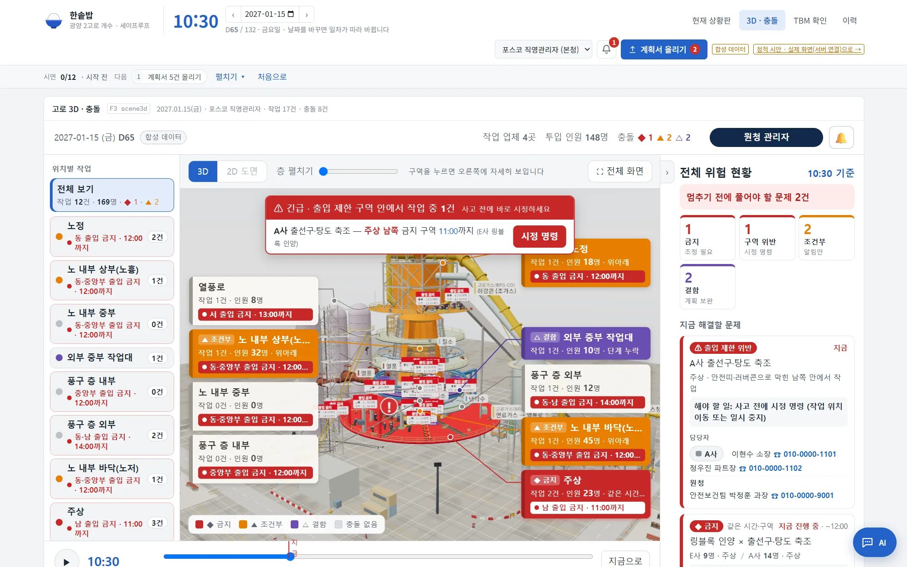
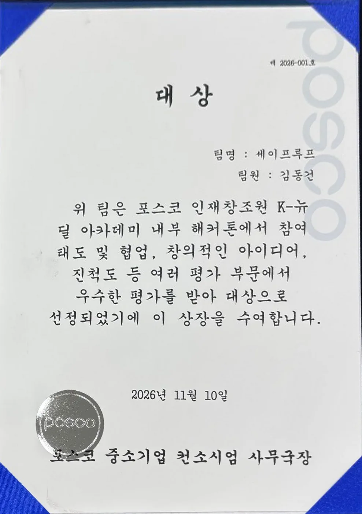

한솥밥
고로 개수처럼 협력사 10여 곳이 한 현장에 동시에 들어오는 공사에서, 양식이 제각각인 작업계획서를 AI로 구조화하고 규칙으로 계획 간 충돌을 찾아 원청이 착수 전에 조정하게 하는 서비스입니다. 기준 현장은 포스코 광양 2고로 개수(132일)이고, 화면과 데이터는 모두 합성 데이터입니다. 팀 세이프루프로 참가해 대상(1위)을 받았습니다. 저는 고로 3D 화면, 시안 화면의 React 이식, AI와 규칙을 비교하는 실험의 측정 도구를 맡았습니다.
#model

층마다 출입을 막아야 하는 방위를 안전띠·러버콘으로 세우고, 막힌 방위 안에 작업이 잡히면 긴급 알림과 시정 명령을 띄웁니다. 오른쪽은 숫자 타일과 "지금 해결할 문제" 카드로 줄였습니다.
저장소의 정적 시안을 합성 데이터로 열어 캡처했습니다. 협력사명과 연락처는 가상입니다.
팀 결과보고서의 역할 표 기준입니다.
대상(1위), K-뉴딜 아카데미 내부 해커톤(2026.11.10)
참여 태도와 협업, 창의적인 아이디어, 진척도 등 여러 평가 부문에서 우수한 평가를 받아 팀 세이프루프가 대상으로 선정됐습니다.
상장 제 2026-001호, 포스코 중소기업 컨소시엄 사무국장 수여. 상장을 누르면 크게 볼 수 있습니다.

맡은 일
설계와 결과
판정은 규칙이 하고, LLM은 추출과 설명 문장만 맡습니다. 모든 판정에 규칙 ID, 법 조문, 계획서 원문 문장을 붙입니다.
색칠한 단계가 제가 맡은 화면입니다.
제가 만든 표본과 측정 도구로 같은 계획서를 조건별로 돌렸습니다. 양식이 통일되면 AI 없이 규칙만으로 다 읽히고, 양식이 제각각이면 규칙으로 먼저 읽고 못 읽은 것만 LLM에 넘기는 혼합 방식이 가장 정확했습니다.
계획서 9칸(업체, 작업명, 구역, 시작일, 종료일, 주야간, 작업 유형, 선행 작업, 기준 일정 ID)의 칸 정확도입니다. LLM은 Claude Haiku·Sonnet·Opus 세 모델 모두 혼합 방식에서 같은 값을 냈습니다(결과보고서 6.2).
해결한 문제
측정
처음 보는 양식에서 추출 정확도가 99%에서 72%로 떨어지는 이유
틀린 칸을 원인별로 나눠 LLM이 필요한 곳을 좁혔고, 혼합 방식 99.0%로 이어졌습니다
- 고정 시드로 양식을 흔든 변형 20건(칸 412개)과 정답셋을 만들었습니다. 머리글 낱말, 열 순서, 병합 셀, 날짜 표기, 업체명 위치를 바꾸고, 표 대신 문장으로 쓴 계획서도 넣었습니다.
- 추출 측정 스크립트에 LLM만 쓰는 조건, 작업 완전 일치율, 건당 시간, 3회 반복 일치율, 토큰 집계를 더해 모든 조건에 같은 표본을 넣게 했습니다.
27.1.15) 날짜 11칸, 기준 일정 ID 3칸이었습니다. 머리글·열 순서·병합 셀 같은 나머지 표 변형은 모두 맞혔습니다. 기준 일정 ID는 추출기가 그 칸을 읽지 않고 작업명으로 찾는 한계라, 통일 양식에도 같은 1칸이 남는다는 것도 찾았습니다.
3D 화면
경고가 너무 많아 어느 방향을 막아야 하는지 안 보이던 3D
허용·금지 방위가 맞닿는 경계에만 안전띠를 세우고, 위반 작업만 긴급 알림으로 올렸습니다
- 위험 방위를 구역과 30분 단위로 묶어 3D에 넘기고, 허용·금지 방위가 맞닿는 경계에만 안전띠·러버콘·출입금지 표지를 세웠습니다(북쪽 금지면 북·동, 북·서 경계).
- 상황판이 판정을 넘기면 3D는 경고를 새로 만들지 않게 해 두 화면의 충돌 수를 맞췄습니다.
- 작업 방위가 막힌 방위와 겹칠 때만 긴급 알림을 띄우고, 시정 명령 창에서 금지 시간이 가장 짧은 방위로 옮기거나 해제까지 중지하게 했습니다.